All photographs are real images downloaded from Wikimedia Commons and served from this repository (resized/recompressed; CC BY-SA images are shared under the same license). Third-party robots (DARPA/Boston Dynamics LS3, NASA Robonaut 2, NOAA ROV Deep Discoverer, KUKA arm) appear as reference imagery only and are not Remote Robotics products. No endorsement by any agency or photographer is implied.
| IMG | TITLE | AUTHOR | LICENSE | SOURCE |
|---|---|---|---|---|
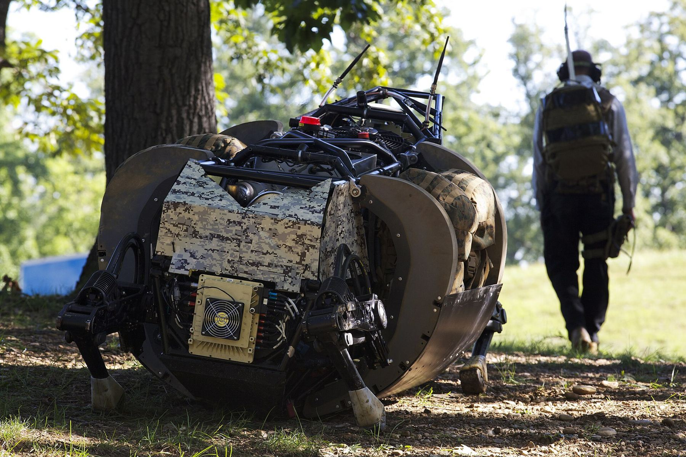 | Legged squad support system demonstration held 120910-M-LU710-074 | Sgt. Mallory Vanderschans | Public domain | Wikimedia Commons |
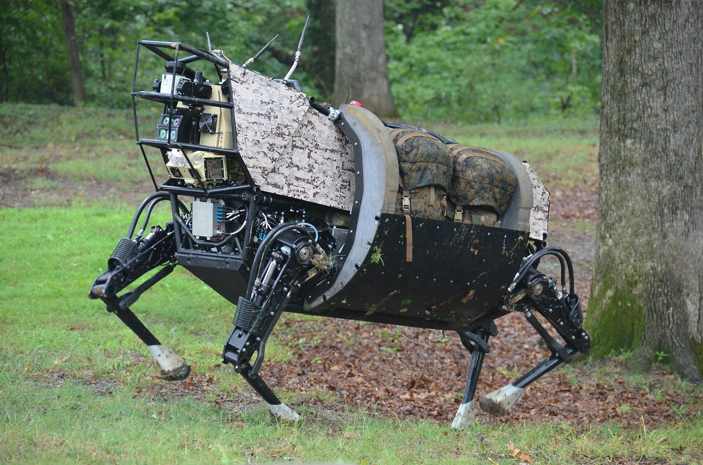 | Legged Squad Support System robot prototype | Tactical Technology Office, Defense Advanced Research Projects Agency, U.S. Department of Defense | Public domain | Wikimedia Commons |
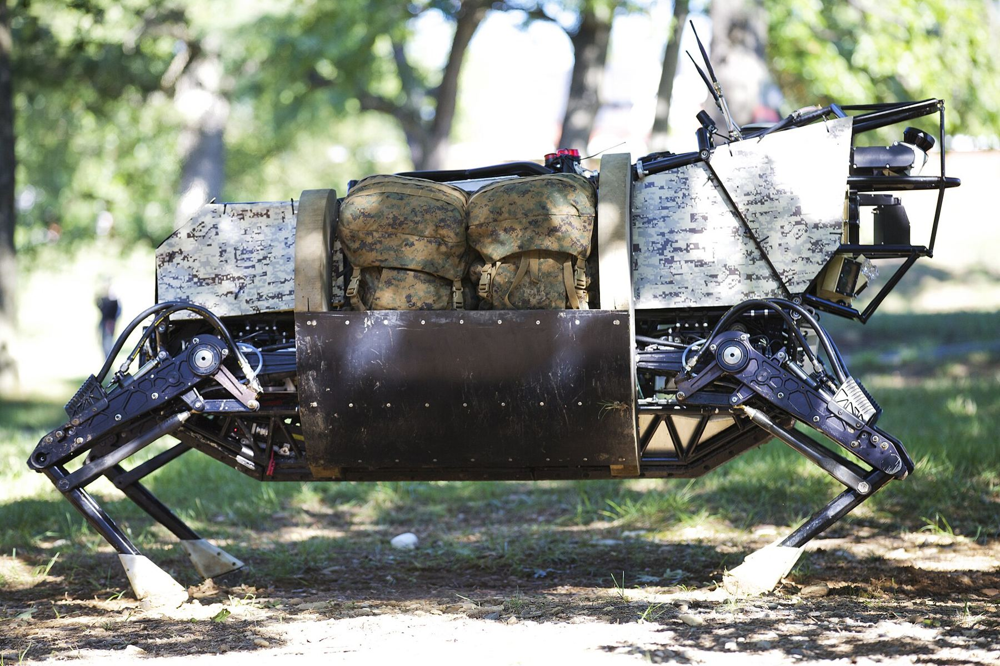 | Legged squad support system demonstration held 120910-M-LU710-091 | Sgt. Mallory Vanderschans | Public domain | Wikimedia Commons |
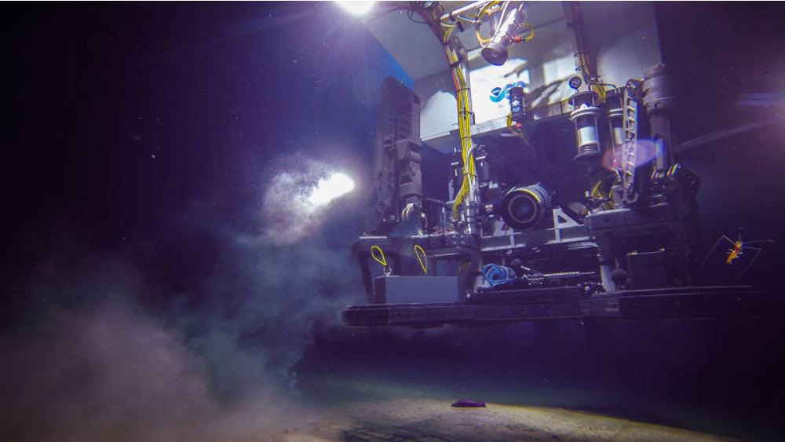 | Deep Discoverer manipulator arm NOAAS Okeanos Explorer (R 337) 25 April 2015 | NOAA Office of Ocean Exploration and Research, Exploring Puerto Rico’s Seamounts, Trenches, and Troughs | Public domain | Wikimedia Commons |
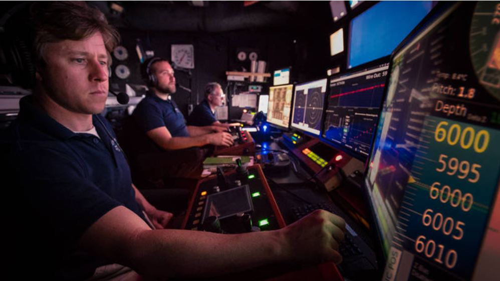 | ROV Deep Discoverer pilots aboard NOAAS Okeanos Explorer (R 337) 26 April 2015 | NOAA Office of Ocean Exploration and Research, Exploring Puerto Rico’s Seamounts, Trenches, and Troughs | Public domain | Wikimedia Commons |
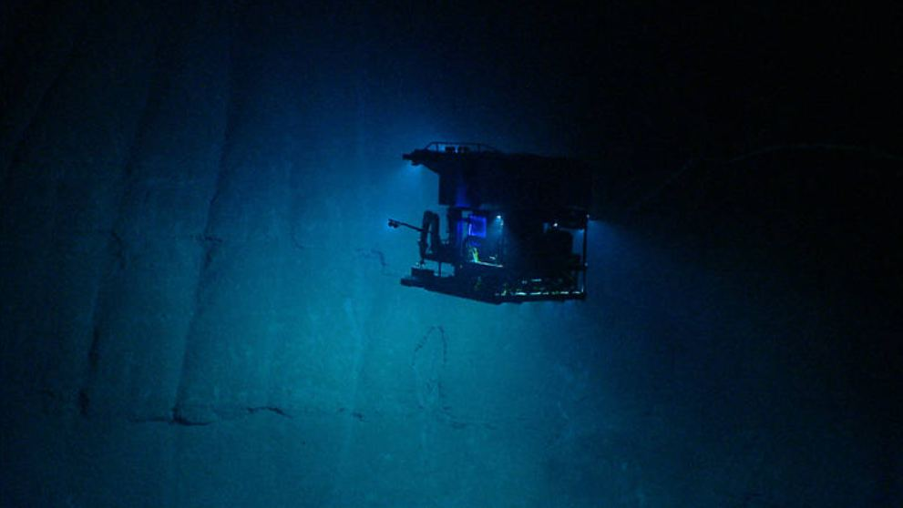 | ROV Deep Discoverer climbs Guayanilla Canyon April 2015 | NOAA Office of Ocean Exploration and Research | Public domain | Wikimedia Commons |
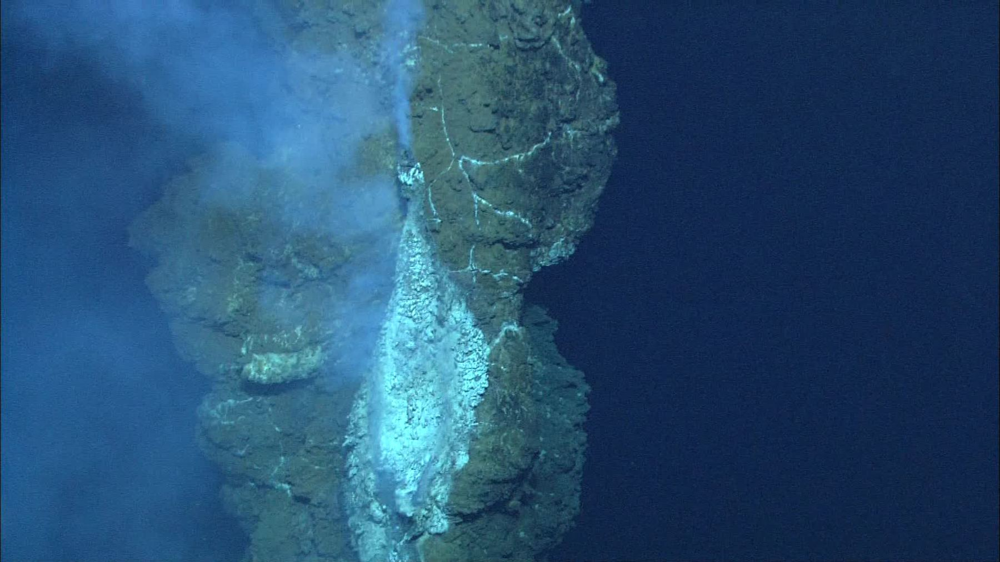 | Chimney-hires | NOAA Vents Program | Public domain | Wikimedia Commons |
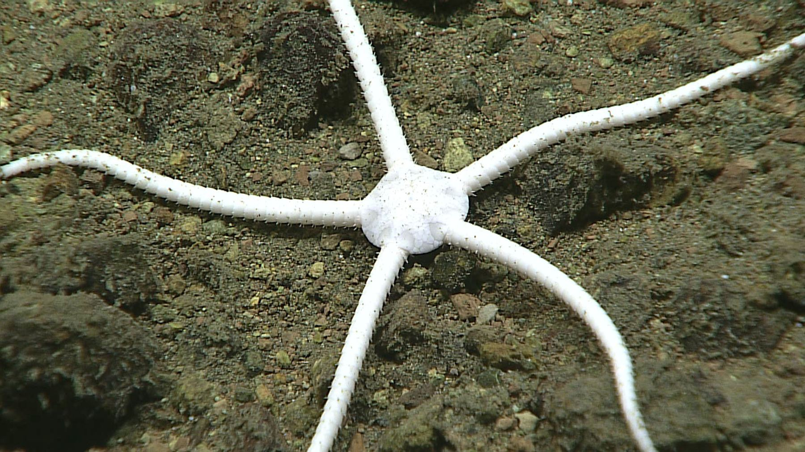 | Stegophiura ponderosa EX1605L3 IMG 20160628T023004Z ROVHD OPH | NOAA Okeanos Explorer | Public domain | Wikimedia Commons |
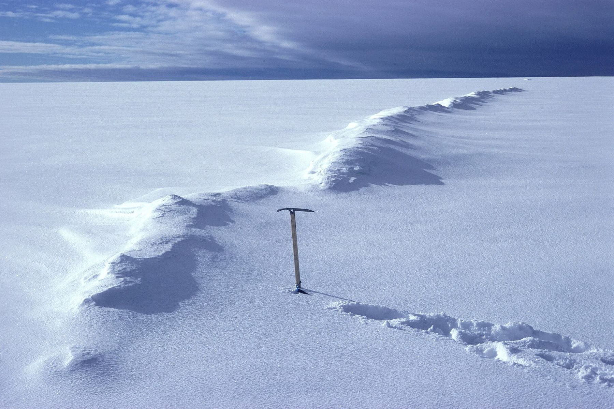 | Compressed crevasse-North Greenland-1978 | Finn-j | CC0 | Wikimedia Commons |
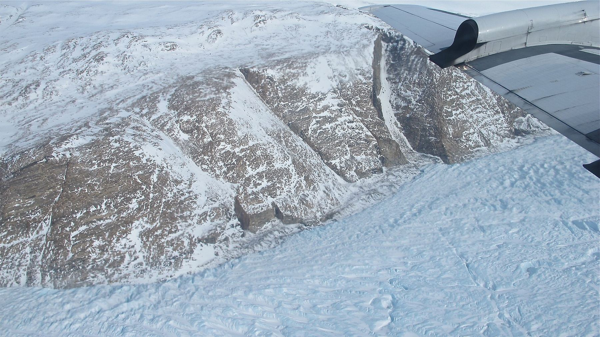 | East Greenland glacier (13798525543) | NASA ICE | Public domain | Wikimedia Commons |
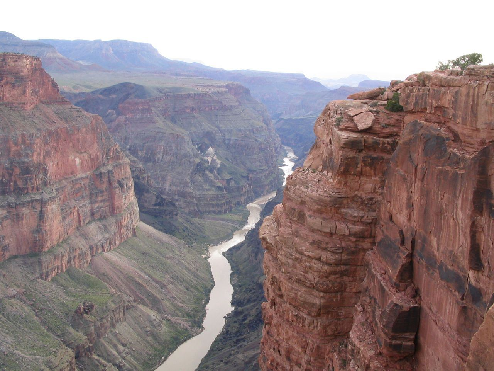 | Colorado River, Toroweap Overlook, Grand Canyon National Park, Arizona (69547445) | Ken Lund from Reno, Nevada, USA | CC BY-SA 2.0 | Wikimedia Commons |
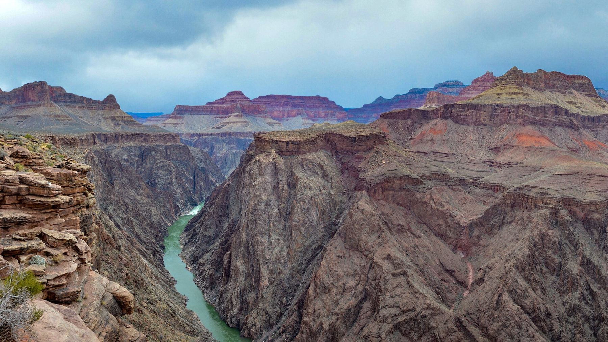 | Colorado River as Seen from Plateau Point off the Bright Angel Trail - Grand Canyon National Park 2130 | Grand Canyon NPS | CC BY 2.0 | Wikimedia Commons |
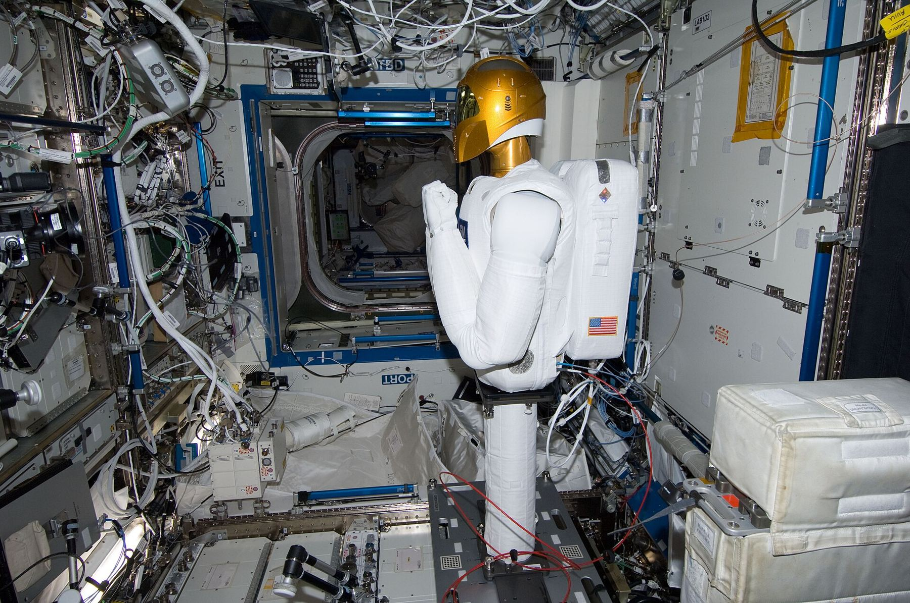 | ISS-29 second onboard tests of Robonaut 2 | NASA | Public domain | Wikimedia Commons |
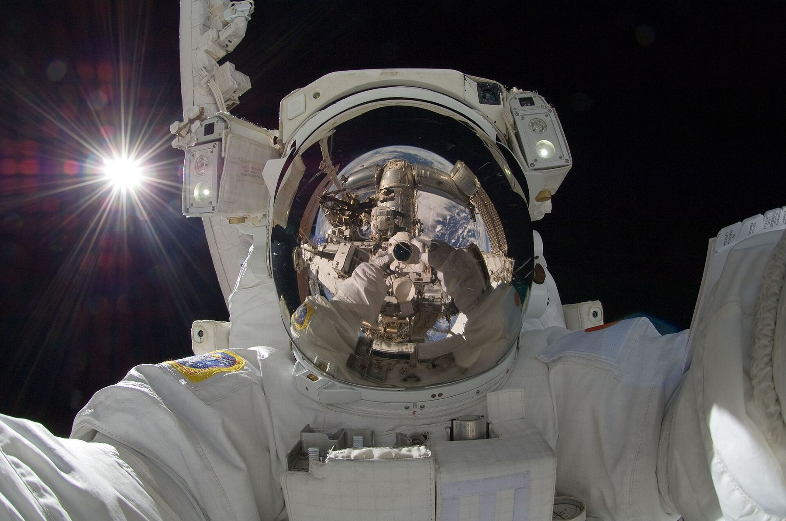 | ISS-32 American EVA b3 Aki Hoshide | NASA | Public domain | Wikimedia Commons |
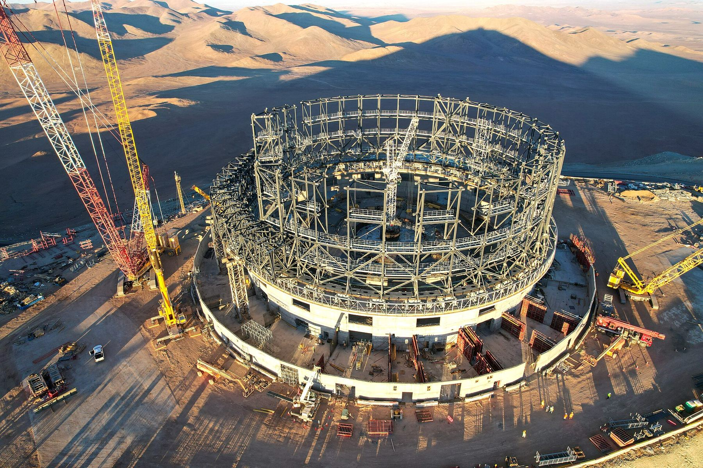 | Drone shot of the ELT under construction at Cerro Armazones (eso2310b) | ESO | CC BY 4.0 | Wikimedia Commons |
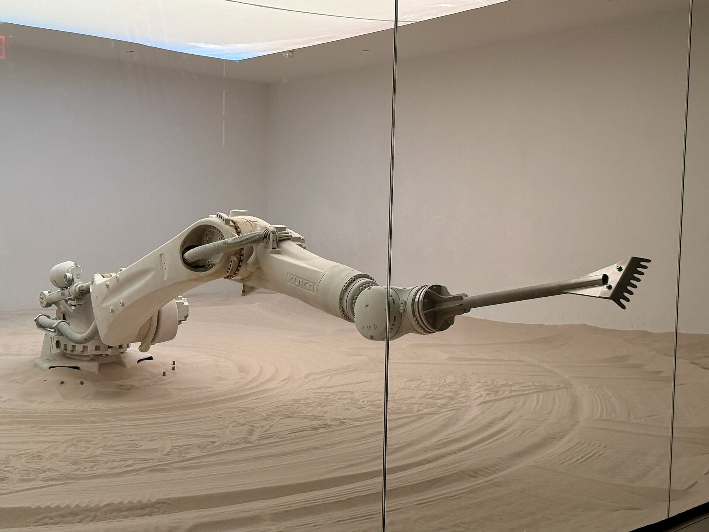 | KUKA industrial robotic arm performing "The Beach" by Roy Nachum - 03 | Oleg Yunakov | CC BY-SA 4.0 | Wikimedia Commons |
| Patent Case File No. 491,927, Mechanical Horse, Inventor- Lewis A. Rygg - DPLA - 12415a4c22eabc3450e1b11e889dc995 (page 2) | Department of Commerce. Patent and Trademark Office. (1975) | Public domain | Wikimedia Commons |
Historical citation: U.S. Patent No. 491,927, "Mechanical Horse," Lewis A. Rygg, St. Paul, Minnesota; filed April 1892, granted Feb. 14, 1893 — Google Patents.


_25_April_2015.png){kind=link}
_26_April_2015.png){kind=link}


.jpg){kind=link}
.jpg){kind=link}


.jpg){kind=link}

.jpg){kind=link}